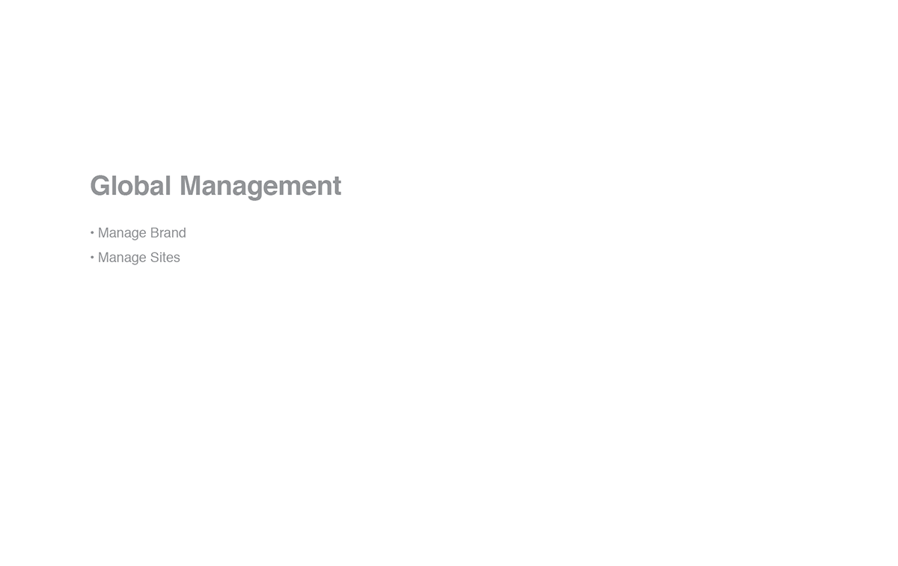

- Date: July 2013
- Roles: Analyze, Design, Build
- Tools: Adobe InDesign, Adobe PDF, MS Office Suite, Rally (Agile Development)

" Application (Data Exchange Framework) "
The NBC executives/stakeholders were in need of a custom platform with tools to better manage their brands, and the members of each brand. The Identity Data Exchange (IDX) would be ⅓ part of this initiative providing a member profile data repository designed to facilitate the capture, storage, and provisioning of demographic, psychographic, and behavioral information. IDX would track the source, context, and timing of captured data which allows for various perspectives on a member’s identity to be considered. The data would allow for better customer management and monitor across the vast library of NBC assets.
The collection of data across sites, brand and experiences would enable multiple views of a member profile and serves many needs including membership analytics, targeted advertising, and creating enhanced user engagements with more personalized experiences.
My focus was on designing a tool to address the business needs that wasn't overwhelming and utilitarian to the user. Before documenting any UI pieces, it was imperative to analyze all the information collected by the product team and participate in brainstorming sessions to comprehend of all the moving parts.
It was imperative to have a developer present during our strategy sessions based on apparent limitations of the back-end technologies on which the platform was being deployed. Below are a some of the features/requirements that were of high importance: -
Flow diagrams were prepared to communicate the logic of each actor within the system. The completion of these user/data flow diagrams paved the way for the data taxonomy and interface design.
Following the order of importance for each user stories and platform milestone, individual pieces of the product were designed and present during our daily scrum sessions for sign-off. Next steps were to provide support for the visual designers, developers and QA team with answering questions with resolving any potential issues.
Within the agile development methodology, the team meticulous design and built a platform that streamline the capturing of user registration data across the NBC network. The IDX product enforced authentication in a multi-tier architecture and offered basic charting to communicate reporting metrics.